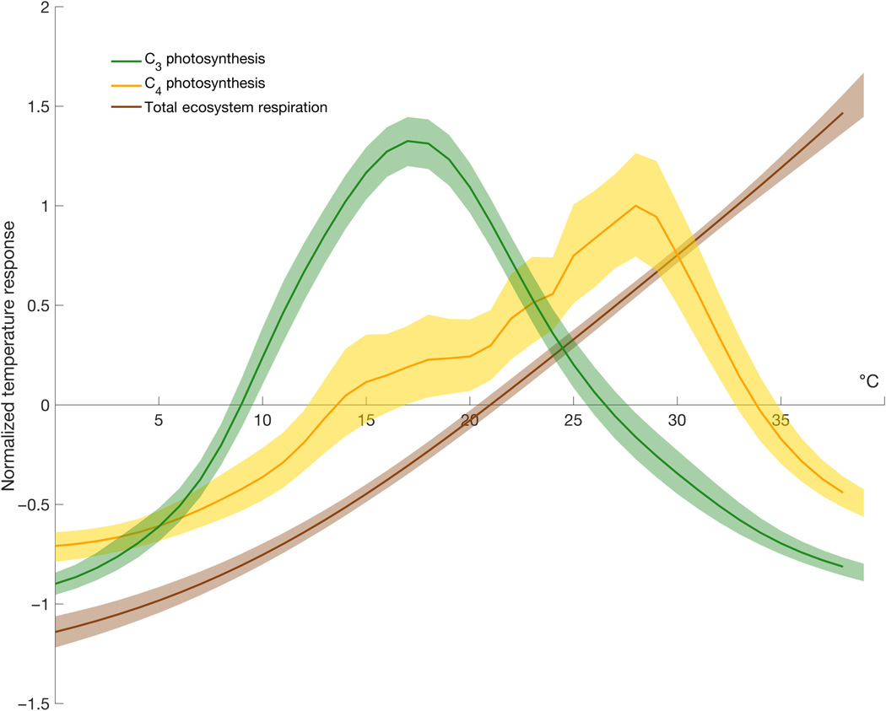
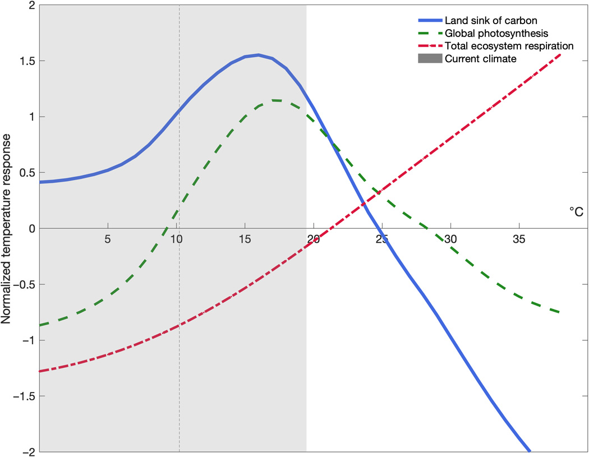

11 Forests
11.1 Forests tipping: go from sink to source of CO2 due to temperature increase.
New research shows that Earth’s overheated climate will alter forests at a global scale even more fundamentally, by flipping a critical greenhouse gas switch in the next few decades. The study suggests that, by 2040, forests will take up only half as much carbon dioxide from the atmosphere as they do now, if global temperatures keep rising at the present pace.
Global warming has contributed to thinning canopies in European forests and to sudden die-offs of aspen trees in Colorado, as well as insect outbreaks that are killing trees around the world. In many places, forests are not growing back.
The data show a clear temperature limit, above which trees start to exhale more CO2 than they can take in through photosynthesis. The findings mark a tipping point, of sorts, at which “the land system will act to accelerate climate change rather than slow it down,”
Trees From Sink to Source (InsideClimateNews)
At present, the land provides a “climate service” by absorbing around 30 per cent of the emissions caused by humans each year.
Unlike other tipping elements in the Earth system, the climate tipping point for the terrestrial biosphere could be exceptionally close – 20-30 years away – without action.
Plant respiration, the process by which plants produce energy for growth, causes CO2 to be released into the atmosphere.
The ‘buffer’ or ‘discount’ against carbon emissions that we currently receive from the biosphere is more fragile than we previously realised.
Climate models are tools used by scientists to simulate how the world is likely to respond to greenhouse gas emissions.
However, it is worth noting that the global dataset used in the study uses “very few samples from tropical regions.” This means that it is still not fully understood how tropical forests are responding to rising temperatures.
Memo Duffy
The temperature dependence of global photosynthesis and respiration determine land carbon sink strength. While the land sink currently mitigates ~30% of anthropogenic carbon emissions, it is unclear whether this ecosystem service will persist and what hard temperature limits, if any, regulate carbon uptake.
The mean temperature of the warmest quarter (3-month period) passed the thermal maximum for photosynthesis during the past decade. At higher temperatures, respiration rates continue to rise in contrast to sharply declining rates of photosynthesis.
Under business-as-usual emissions, this divergence elicits a near halving of the land sink strength by as early as 2040.
The difference between gross primary productivity and total ecosystem respiration (carbon uptake by vegetation minus carbon loss to the atmosphere) comprises the metabolic component of the land carbon sink [net ecosystem productivity (NEP)].
To date, land ecosystems provide a climate regulation service by absorbing ~30% of anthropogenic emissions annually. While temperature functions as a key driver of year-to-year changes in the land carbon sink, its temperature response is still poorly constrained at biome to global scales, making the carbon consequences of anticipated warming uncertain.
Like all biological processes, metabolic rates for photosynthesis and respiration are temperature dependent; they accelerate with in- creasing temperature, reach a maximum rate, and decline thereafter.
Highly divergent land carbon sink trajectories from Earth system models.
Continued future increases in sink strength due to the CO2 fertilization.

The temperature response of global photosynthesis shows distinct maxima at 18°C for C3 and 28°C for C4 plant systems. In contrast to photosynthesis, respiration rates increase across the range of ambient temperatures (up to 38°C), with no evidence of Tmax or rate decline. The thermal maxima of leaf and soil respiration reside at ~60°-70°C.
Responses diverge at temperatures above Tmax. The imbalance grows more pronounced as temperature increases.
Current climate mostly lies just below Tmax where slight increases in temperature act as climate fertilization of land carbon uptake. Under anticipated warming foreshadowed by historical temperature extremes and coincident land carbon loss—however, more and more time will be spent above Tmax. Past this threshold, the land carbon balance will first weaken and ultimately reverse sign from carbon sink to carbon source.
25°C constitutes a powerful tipping point for the land sink of carbon and a formidable positive climatic feedback,

Currently, less than 10% of the terrestrial biosphere experiences where land carbon uptake is degraded. For regions that do experience these temperatures, exposure is limited to 1 to 2 months or constitutes areas with sparse to no vegetation.
Under business-as-usual emissions, by 2100, up to half of the terrestrial biosphere could experience temperatures past the treshold.
The impact of elevated temperatures on the land sink is more than a function of cumulative area. Biomes that cycle 40 to 70% of all terrestrial carbon including the rainforests of the Amazon and Southeast Asia and the Taiga forests of Russia and Canada are some of the first to exceed biome-specific Tmax for half the year or more. This reduction in land sink strength is effectively front-loaded in that a 45% loss occurs by midcentury, with only an additional 5% loss by the end of the century. These estimates are conservative as they assume full recovery of vegetation after temperature stress and ignore patterns and lags in recovery.
In contrast to any CO2 fertilization effect, anticipated higher temperatures associated with elevated CO2 could degrade land carbon uptake. Failure to account for this results in a gross overestimation of climate change mitigation provided by terrestrial vegetation.
We are rapidly entering temperature regimes where biosphere productivity will precipitously decline and calls into question the future viability of the land sink.
Duffy(2021) Temperature tipping point of the terrestrial biosphere (pdf)
11.2 Plant and Cut - Forest CCS
Wood can also serve purely as a long-term carbon storage device. The key to locking away the carbon is to cut off the oxygen supply to microbes, thereby preventing decomposition.
Natural experiments show how this can be done. 19th-century lumberjacks in the US and Canada frequently stored logs on the surfaces of the Great Lakes or floated them down rivers, some of which ended up sinking along the way. These have remained in such good condition that a modern-day cottage industry has arisen to recover the logs and turn them into everything from hardwood floors to violins. New Zealand has a similar industry with logs that were fortuitously buried in swamps as long as 60,000 years ago.
Based on such examples, scholars have proposed chopping down trees or collecting fallen logs and intentionally stowing them away. That could mean sinking them to the bottom of lakes, interring them in abandoned mines or burying them in specially dug trenches. The idea hasn’t gotten much traction yet, but in 2013, the Quebec Ministry of Agriculture, Fisheries and Food funded a pilot project to dig a trench and bury 35 metric tons of wood. The project came to about $29 per metric ton of CO2 sequestered, according to government scientist Ghislain Poisson, in line with a theoretical estimate of $10-$50.
That is cheaper than most high-tech forms of carbon capture and storage, which usually involve machines that filter carbon out of the air and pump it underground. Sequestering carbon at the typical power plant, where emissions are highly concentrated, runs to $30-$91 per metric ton of CO2, but in open air, which is the holy grail, costs theoretically range from $94-$232. To help this promising new technology get off the ground (or rather, into the ground), the federal government offers a tax credit of about $35 for every metric ton of CO2 removed in industrial carbon capture and storage. It’s a policy that has enjoyed strong bipartisan support for over a decade.